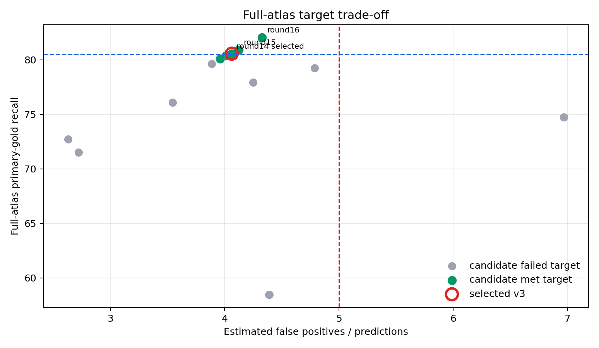
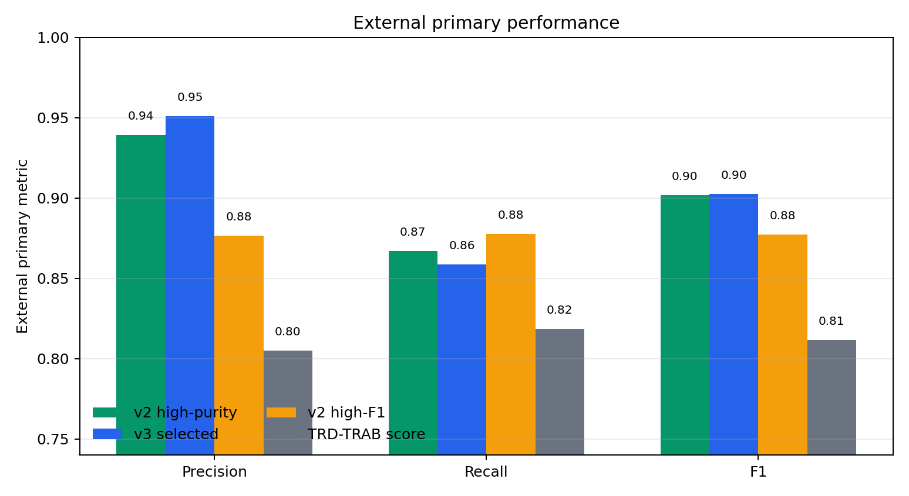
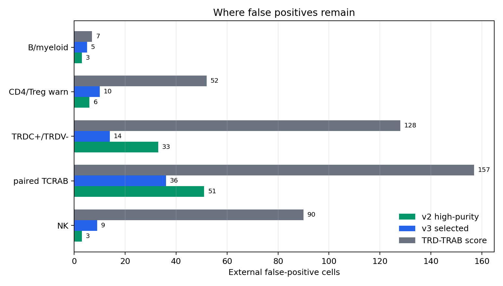
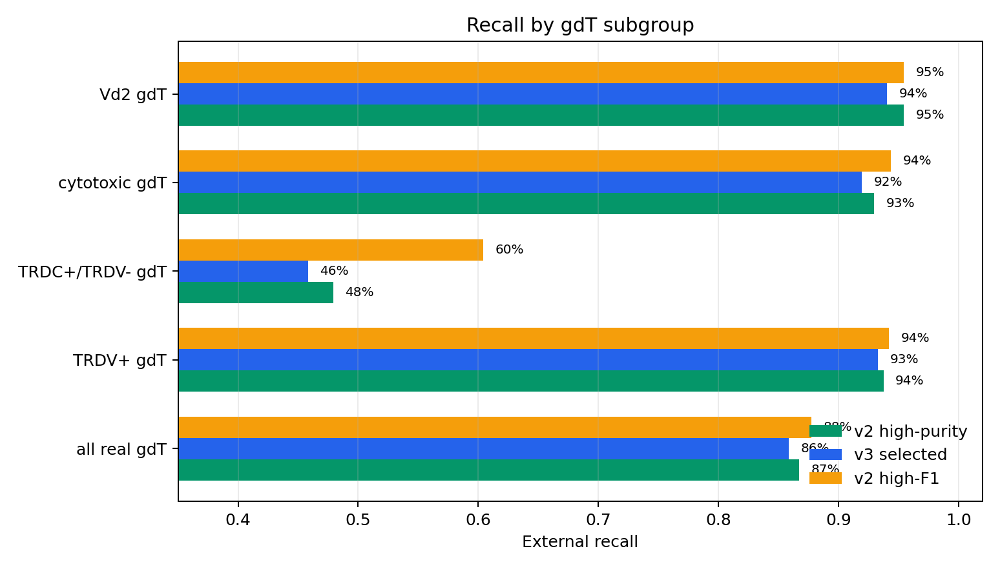
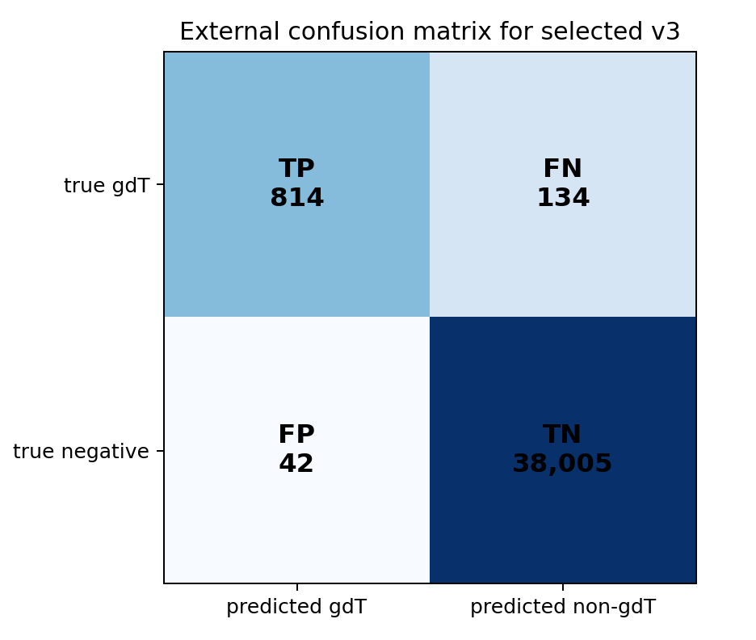
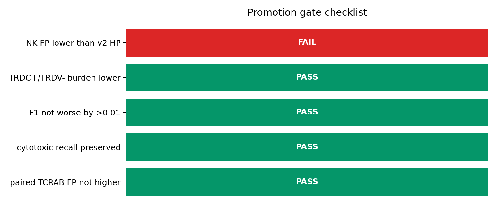

gdTAI v3 TRDC/NK Guard Decision Report
Decision: do not promote this candidate as the default gdTAI v3.0 model yet.
The selected candidate meets the requested atlas-level recall and estimated false-positive target, but it fails the explicit NK false-positive promotion gate on the independent external test.
1. What changed in this iteration
GSE144469 contributed 63,764 train/tune cells (4,003 gdT positives and 59,761 abT negatives). The non-GSE144469 validation block remained held out with 186,195 cells.
Hard NK negatives follow the requested rule: 1,453 NK TRDC+TRDV- cells from 23 datasets were retained (888 train, 565 tune). NK cells outside this expression rule were excluded from NK hard negatives (31,117 cells). NK+TCRAB-overlap cells were not used as explicit NK hard negatives; 4 expression-passing weak-TRDC overlap cells were also removed.
2. What the algorithm is
The selected candidate is v3_round14_v2_score_trdc_gate_fixed_0p936 at threshold 0.936. It is not XGBoost. It is a conditional guard around the gdTAI v2 transcriptome score, with engineered features for TCR gene evidence, CD3 strength, NK-marker strength, and TRDC-only risk.
External inference requires raw counts from layers["counts"] and computes log1p(counts per 10,000). It does not require TCR-seq metadata at inference time.
3. How the candidate was selected
The initial internal winner was v3_round03_hist_gradient_target_recall80_fp05, but it reached only 72.70% full-atlas primary-gold recall. The final selected round reached 80.56% recall and 4.06% estimated FP/prediction, passing the 80.5% recall-with-margin and 5.0% estimated-FP targets.
External test results were not used for model selection. The best external-F1 v3 row was v3_round08_hist_gradient_fixed_0p64 with F1 0.9087, but that was evaluated only after the selection decision.


4. External test result
| Metric | v3 selected | v2 high-purity | Interpretation |
|---|---|---|---|
| External precision | 95.1% | 93.9% | v3 higher |
| External recall | 85.9% | 86.7% | v3 slightly lower |
| External F1 | 0.9024 | 0.9018 | near-tie |
| External FP / predictions | 4.9% | 6.1% | v3 lower |
| External NK FP | 9 | 3 | v3 worse |
v3 reduced total external false positives from 53 to 42. It also reduced paired-TCRAB false positives from 51 to 36 and TRDC+/TRDV- false positives from 33 to 14.
The problem is NK specificity: NK false positives increased from 3 in v2 high-purity to 9 in selected v3.


5. Full-atlas application
| Full-atlas metric | v3 selected | v2 high-purity |
|---|---|---|
| Predicted putative gdT | 251,356 | 359,857 |
| Primary-gold recall | 80.56% | 80.56% |
| Primary-gold precision | 97.52% | 97.61% |
| Estimated total abT FP | 10,212 | 9,680 |
| Estimated FP / predictions | 4.06% | 2.69% |
| Predicted paired TCRAB | 5,580 | 5,184 |
| Predicted TRDC+/TRDV- | 17,120 | 130,846 |
The full-atlas recall is measured on primary gold labels only: 46,544 / (46,544 + 11,232) = 80.56%. This is not a claim of absolute biological recall for every unlabeled gdT cell.
The estimated abT FP count uses observed paired-TCRAB false-positive behavior in TCR-seq sources and extrapolates it to datasets without TCR-seq. It is the best current estimate, but it is still an estimate.


6. Why this should not be promoted yet
| Gate | Status | Evidence |
|---|---|---|
| NK false positives lower than v2 high-purity | FAIL | v3 9 vs v2 high-purity 3 |
| TRDC+/TRDV- false-positive burden lower | PASS | v3 14 vs v2 high-purity 33 |
| External F1 not worse by more than 0.01 | PASS | v3 0.9024 vs v2 high-purity 0.9018 |
| Cytotoxic gdT recall preserved | PASS | v3 91.9% vs v2 high-purity 93.0% |
| Paired-TCRAB false positives not higher | PASS | v3 36 vs v2 high-purity 51 |
The promotion rule was intentionally stricter than overall F1. The previous concern was NK-like contamination, especially around weak TRD evidence. A release model should not improve some aggregate metrics while worsening the named failure mode.
Therefore the correct status is: package and keep as a v3 candidate, but do not write it as the promoted gdTAI_v3.0 default model.
7. Detailed artifacts
Large tables are intentionally not embedded in this report. They remain available for audit:
- Model package:
Integrated_dataset/models/gdT_prediction_classifier/gdtai_v3_trdc_nk_guard - Full result tables:
Integrated_dataset/tables/gdT_prediction/gdtai_v3_trdc_nk_guard - Figures:
gdT_prediction/assets/gdtai_v3_trdc_nk_guard - Markdown report:
Integrated_dataset/logs/gdT_prediction/gdtai_v3_trdc_nk_guard/gdtai_v3_trdc_nk_guard_report.md - PDF report:
gdT_prediction/gdtai_v3_trdc_nk_guard_report.pdf